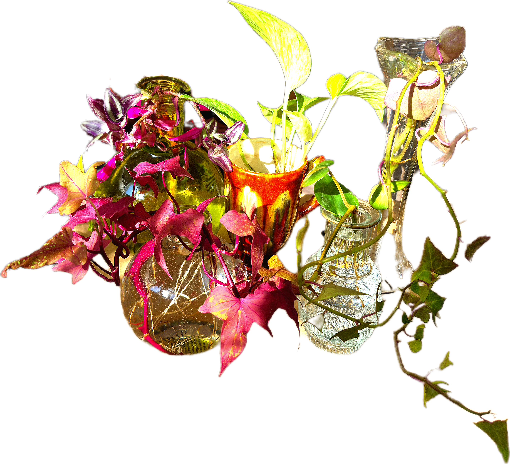
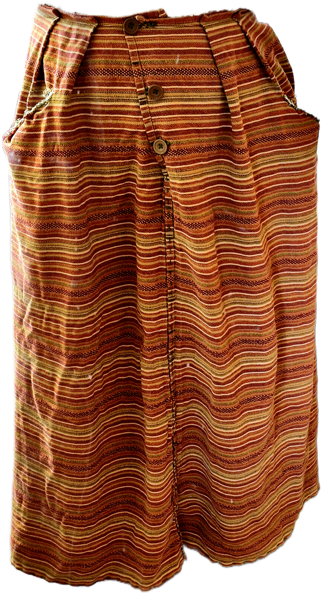
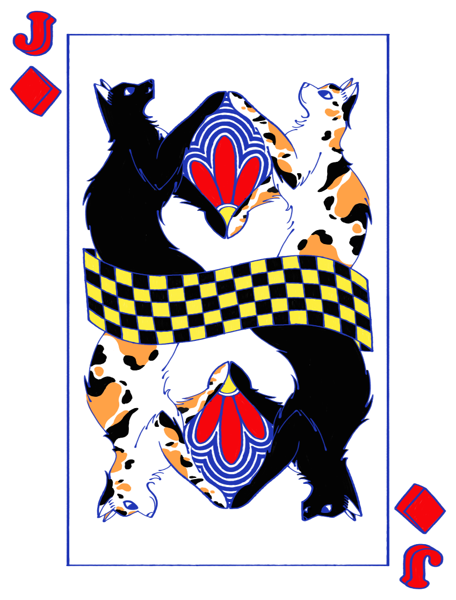

Home
Resume
Projects
About Me
Plants
This is one of my first plants. She used to be not as colorful and had few leaves, now she takes up so much room!
Found this Dusty Miller in the trash. My mom though it was dead, but I managed to save it!

I have so many vine plants! they have been rooting so much lately!
Art
This used to be white, but I spray-painted it and painted dandelions on it!

Made this out of a table cloth I got at a thrift store. It even has pockets!

This is one of the posters I made for my aunt's wedding!